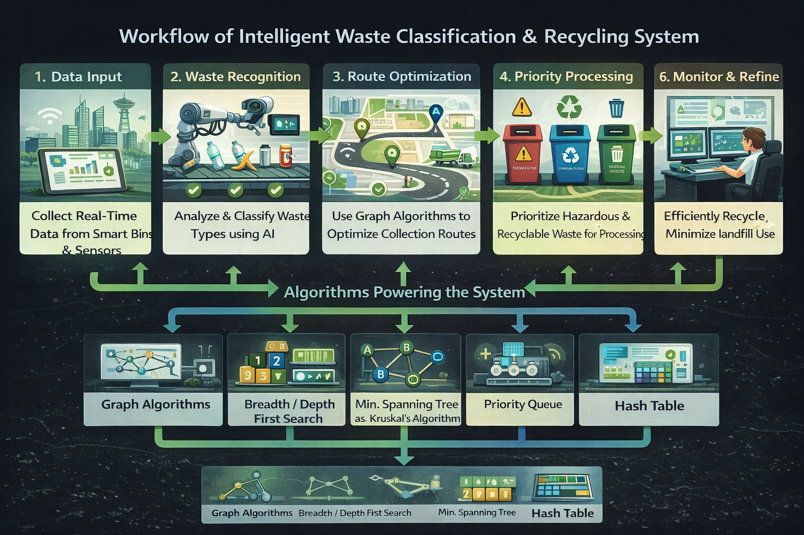

This system enhances smart city waste management by automatically classifying waste, optimizing collection routes, and prioritizing recycling and hazardous waste handling.
Design and Analysis of Algorithms (DAA) ensures efficient area coverage, minimal fuel consumption, and optimized waste processing.
City areas are modeled as nodes and roads as edges to efficiently manage collection routes.
Ensures level-by-level waste collection so no area is missed.
Used for deep inspection of zones to detect illegal dumping and overflow conditions.
Constructs a minimum spanning tree to minimize transportation and fuel costs.
Prioritizes hazardous and recyclable waste for faster processing.
Provides constant-time lookup for waste categories and disposal methods.
Ranks waste categories based on recyclability using an optimized hybrid sorting algorithm.
The full integrated C++ implementation of this system is available below.
View Complete C++ Code | DS / Algorithm | Design Technique | Time Efficiency | Space Efficiency | Stability | Adaptive | In-Place |
|---|---|---|---|---|---|---|
| Graph | Graph Theory | O(V + E) | O(V + E) | N/A | No | No |
| BFS | Queue-Based | O(V + E) | O(V) | No | No | No |
| DFS | Recursion / Stack | O(V + E) | O(V) | No | No | No |
| Kruskal’s Algorithm | Greedy | O(E log E) | O(V) | No | No | No |
| Priority Queue | Heap | O(log n) | O(n) | Unstable | No | No |
| Hash Table | Hashing | O(1) | O(n) | Stable | No | No |
| Introsort (std::sort) | Hybrid | O(n log n) | O(log n) | Unstable | No | Yes |